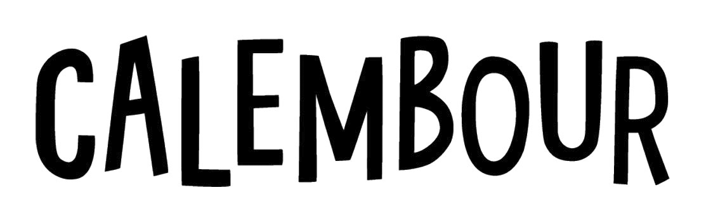
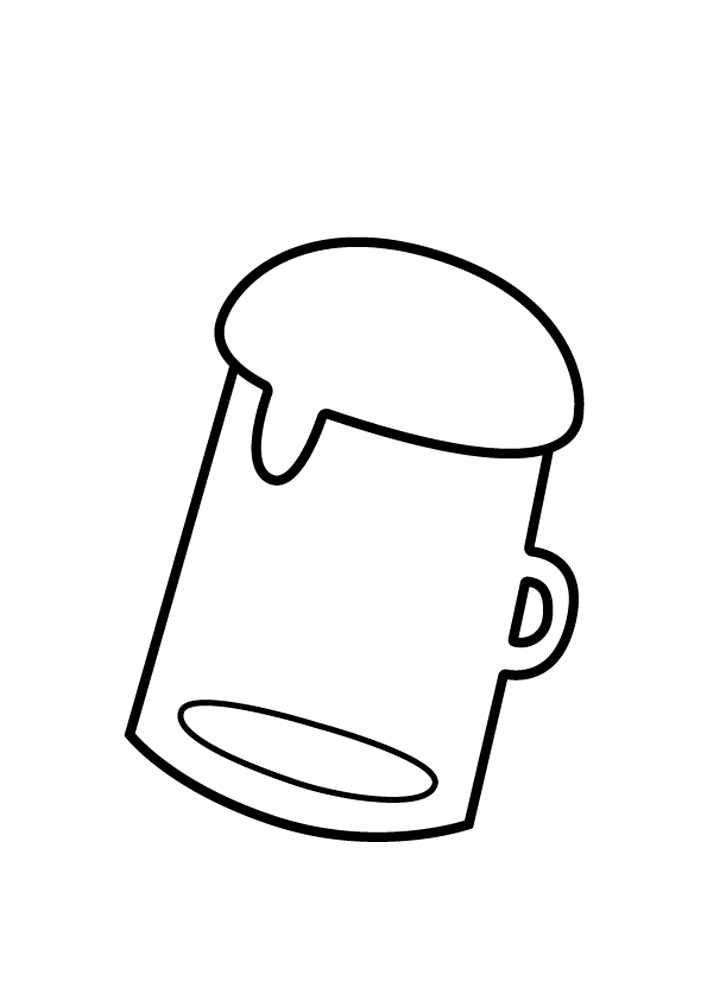
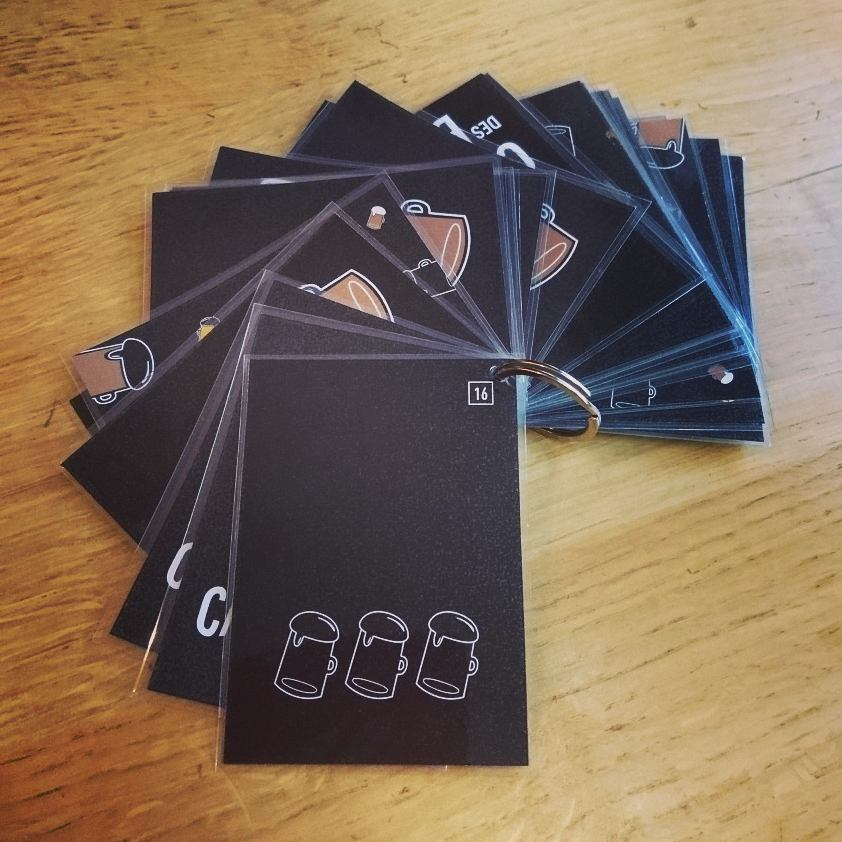
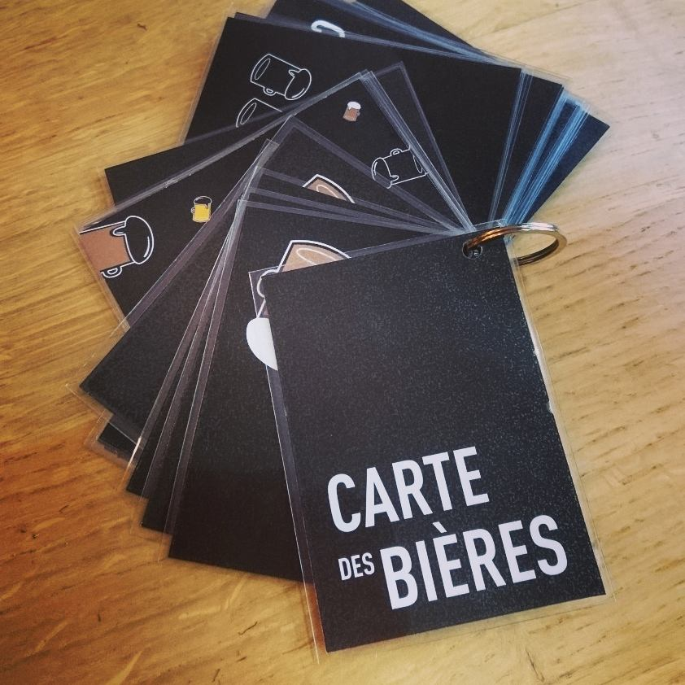
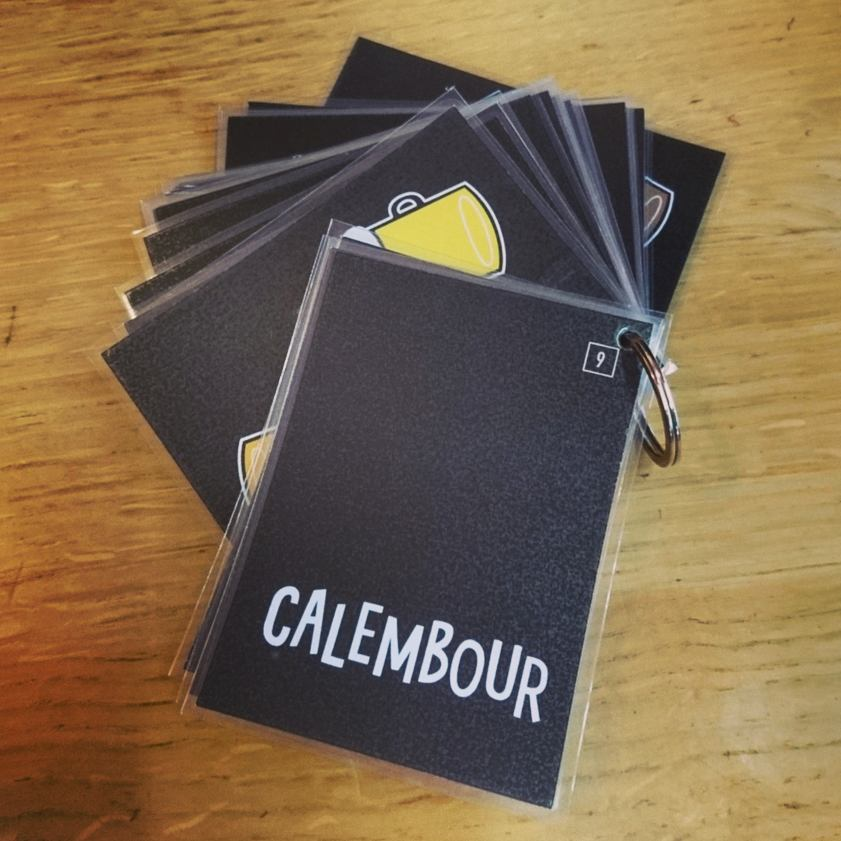
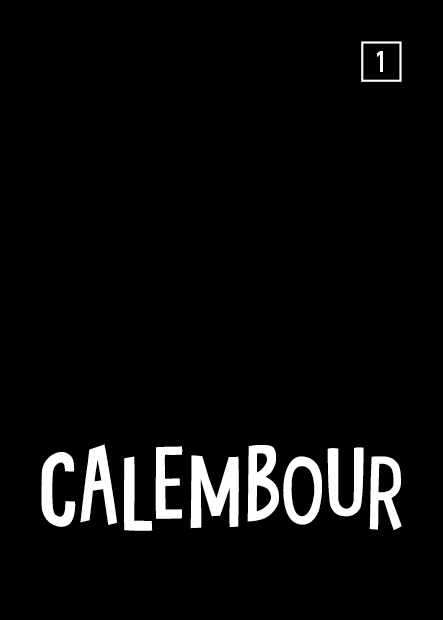
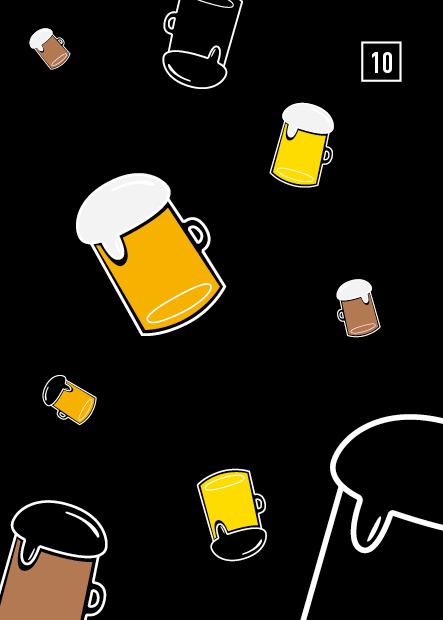
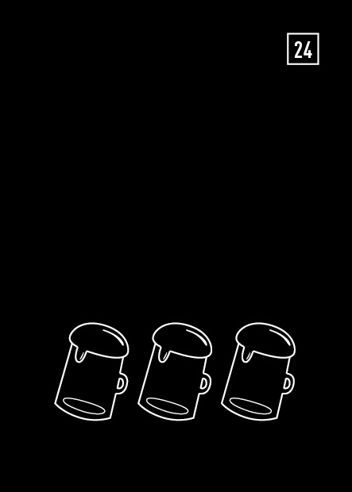
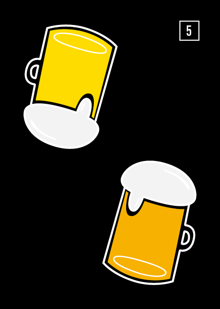
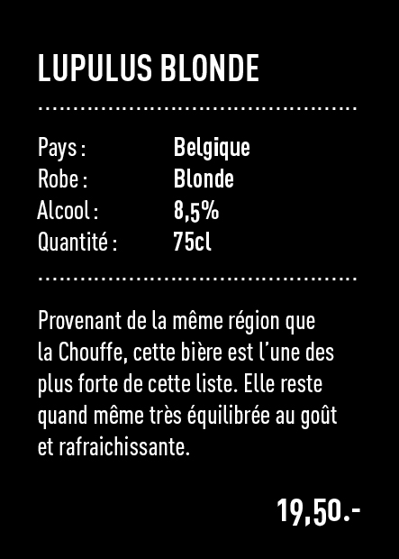

Création de l’identité visuelle ainsi que de la carte des bières pour le bar Le Calembour, à Aigle (vd).
La carte des bières se présente sous forme de plaquettes
dotées d’un recto verso et reliées entre elles avec un anneau. Le numéro présent sur le verso de la carte est là pour aider
le client indécis à choisir une bière. Celui-ci devra tirer un dé et le numéro sorti sera celui de la boisson qu’il devra prendre !